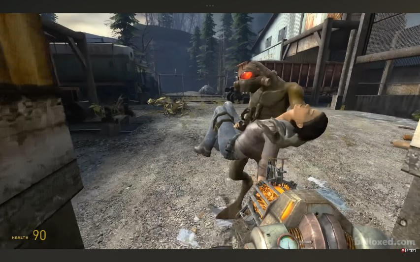
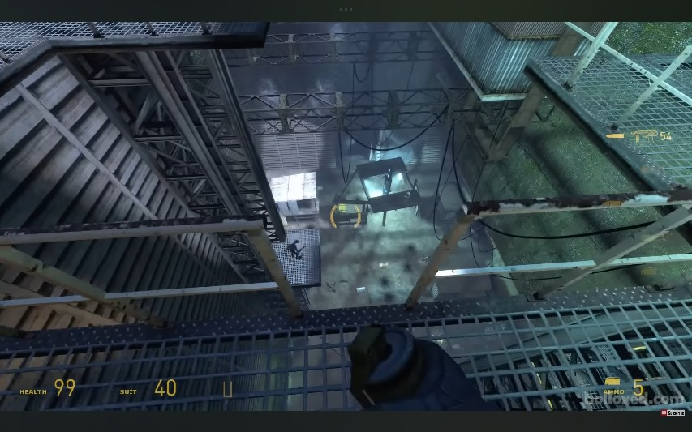
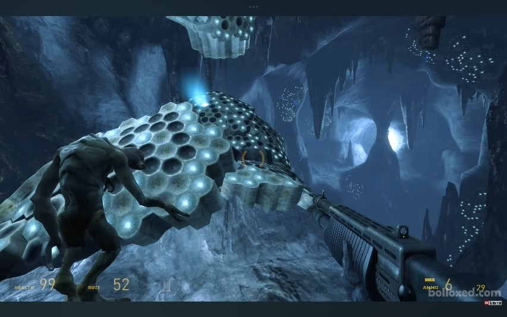
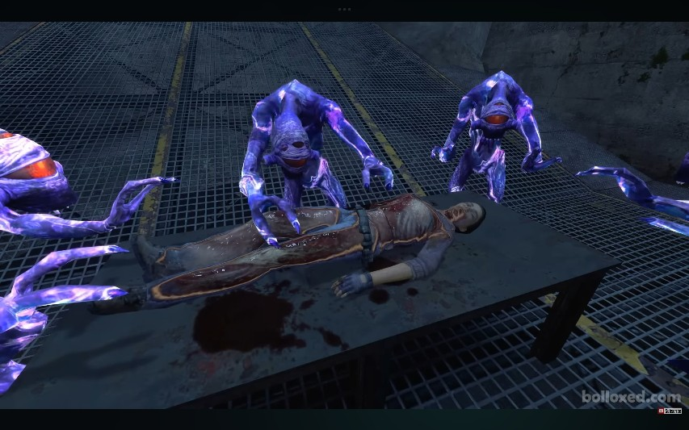
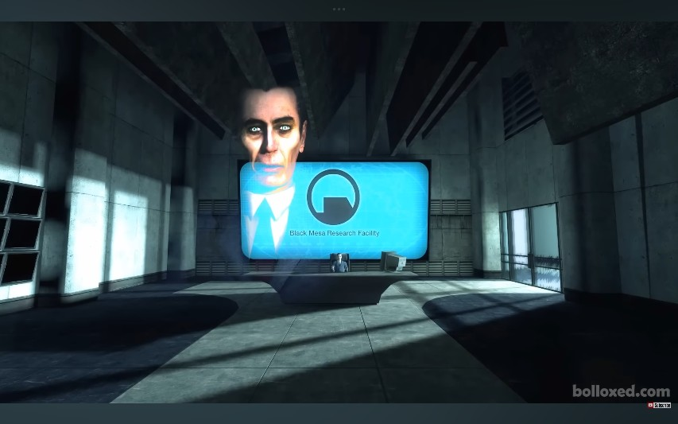
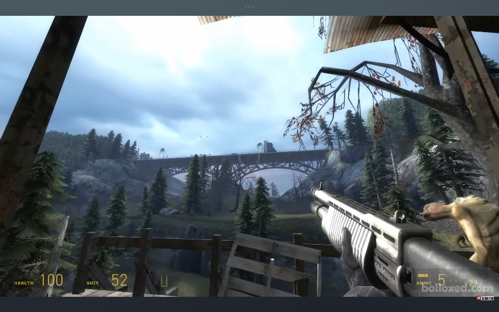
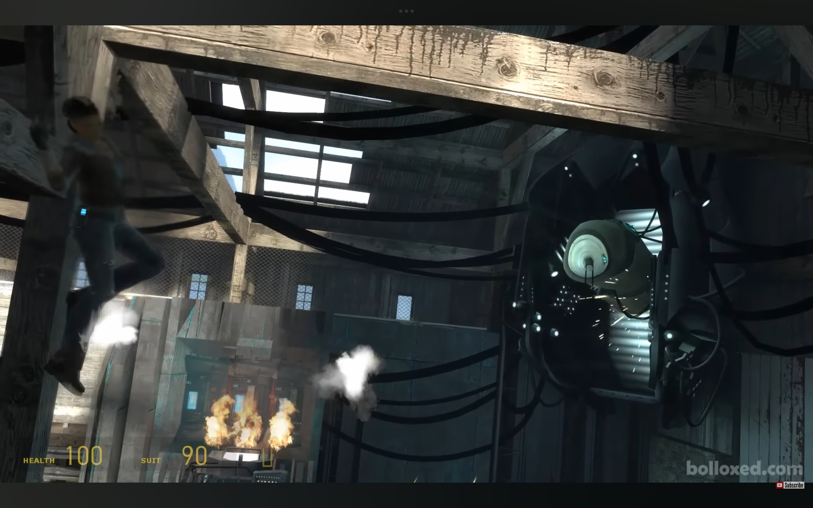
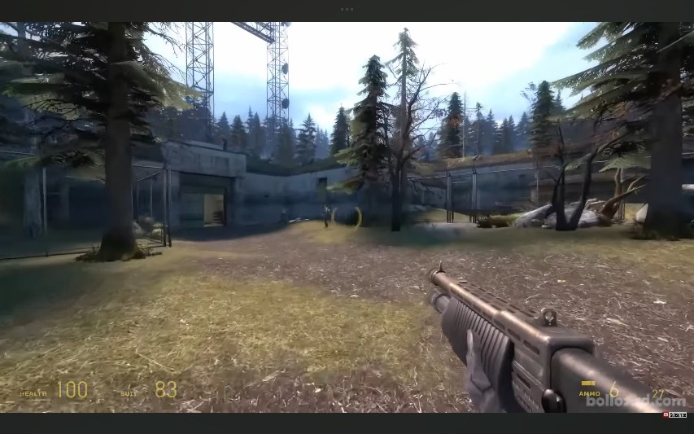
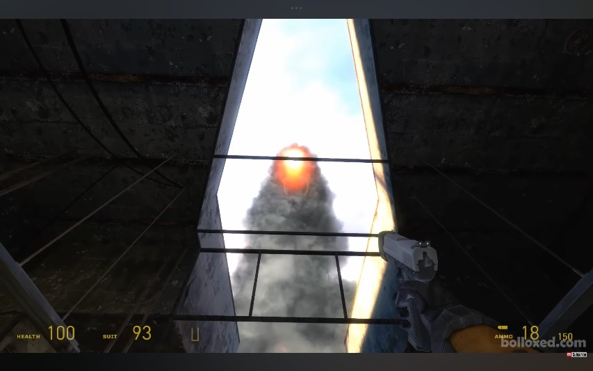
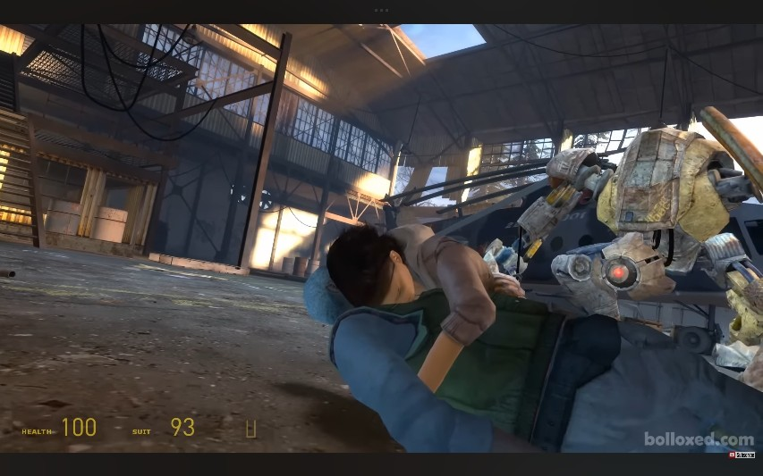

การเดินทางฝ่าความตายในป่าลึก กอร์ดอนและอเล็กซ์ต้องนำข้อมูลสำคัญไปส่งที่ฐานทัพ White Forest ก่อนที่กองทัพ Combine จะเรียกกำลังเสริมผ่านซูเปอร์พอร์ทัลมาทำลายล้างมนุษยชาติจนสิ้นซาก

กอร์ดอนฟื้นขึ้นมาหลังรถไฟตกราง ทั้งคู่รอดชีวิตและเดินทางมุ่งหน้าไปยังฐานต่อต้าน "White Forest" แต่เคราะห์ร้าย อเล็กซ์ถูกโจมตีโดย "Hunter" ของกองทัพ Combine จนบาดเจ็บสาหัส โชคดีที่ Vortigaunt ปรากฏตัวขึ้นมาช่วยเหลือและอุ้มร่างของเธอไปหลบภัยชั่วคราว

เพื่อหาทางยื้อชีวิตอเล็กซ์ กอร์ดอนต้องแยกทางลงไปในปล่องลิฟต์ของเหมือง Victory Mine อันลึกลับและมืดมิด เพื่อหาทางบุกทะลวงลงไปยังรังของมดนรก (Antlion) ที่ซ่อนอยู่ลึกลงไปใต้ดิน

ภายในโถงถ้ำที่เต็มไปด้วยอันตราย กอร์ดอนต้องปะทะกับฝูงมดนรกและพิทักษ์รัง (Antlion Guardian) จนในที่สุดเขาก็ตามหาสารสกัดจากตัวอ่อน (Larval Extract) ที่ส่องแสงเรืองรองอยู่ในรังได้สำเร็จ ซึ่งเป็นส่วนประกอบสำคัญในการรักษา

เมื่อนำสารสกัดกลับมาได้ เหล่า Vortigaunts ได้รวมพลังกันล้อมรอบเตียงผ่าตัดสนาม พวกเขาประกอบพิธีกรรมลี้ลับโดยใช้พลังวอร์ต (Vortal Energy) ผสานเข้ากับสารสกัด เพื่อสมานบาดแผลและดึงจิตวิญญาณของอเล็กซ์กลับมาจากความตาย

ในจังหวะที่พิธีกรรมกำลังดำเนินไป เวลาได้หยุดนิ่งลงและ G-Man ก็ปรากฏตัวขึ้น เขาได้สนทนากับกอร์ดอนและฝากข้อความลับเข้าไปในจิตใต้สำนึกของอเล็กซ์ ให้เธอนำไปบอก อีไล แวนซ์ ผู้เป็นพ่อ ด้วยคำพูดปริศนาว่า "เตรียมรับมือกับผลลัพธ์ที่คาดไม่ถึง" (Prepare for unforeseen consequences)

กอร์ดอนและอเล็กซ์ (ที่ฟื้นตัวแล้ว) เดินทางขึ้นมาสู่พื้นผิว พวกเขามองเห็นกองทัพ Combine บนสะพานกำลังมุ่งหน้าไปทางเดียวกัน กอร์ดอนต้องลุยเดี่ยวข้ามฝ่าพื้นที่ที่มีสารกัมมันตรังสีและฝูงซอมบี้ข้ามสะพานไป เพื่อนำรถยนต์ที่ฝ่ายต่อต้านทิ้งไว้มาใช้งาน

ด้วยรถยนต์คันใหม่ ทั้งคู่ขับซิ่งฝ่าป่าและดงศัตรู พวกเขาต้องปะทะกับ Hunter-Chopper ที่ไล่ล่าอย่างไม่ลดละจนสามารถทำลายมันได้สำเร็จ ระหว่างทางพวกเขาบังเอิญไปพบกับ "Advisor" ที่กำลังฟักตัวอยู่ในโกดัง ทั้งคู่เกือบเอาชีวิตไม่รอดแต่ก็หนีออกมาได้ทัน

หลังจากซิ่งรถฝ่าดงศัตรูและซุ่มโจมตี ในที่สุดกอร์ดอนและอเล็กซ์ก็เดินทางมาถึงฐานทัพคลังจรวดเก่าแก่ White Forest ของกลุ่มต่อต้านอย่างปลอดภัย และได้นำข้อมูลล้ำค่าไปมอบให้ อีไล, ดร.ไคลเนอร์ และ ดร.แมกนัสสัน

กองทัพ Combine บุกเจาะเข้ามาถึงหลังคาไซโลจรวด กอร์ดอนต้องรับมือกับการบุกรุกจากด้านใน เพื่อป้องกันไม่ให้ศัตรูลงมาทำลายจรวดได้ ก่อนที่จะต้องออกไปขับรถไล่ล่าทำลายหุ่นรบ Strider ที่ยกทัพมาอย่างหนักหน่วงด้านนอกฐานทัพ

จรวดถูกปล่อยขึ้นไปปิดซูเปอร์พอร์ทัลได้สำเร็จ แต่ขณะที่พวกเขากำลังเตรียมตัวขึ้นเฮลิคอปเตอร์เพื่อออกเดินทางตามหาเรือ Borealis ศัตรูระดับผู้นำอย่าง Combine Advisor ได้พังกำแพงเข้ามาจับตัวพวกเขาทั้งหมดไว้ และดูดสมองสังหาร อีไล แวนซ์ อย่างโหดเหี้ยมต่อหน้าต่อตา เกมจบลงด้วยภาพอันสะเทือนใจเมื่ออเล็กซ์กอดศพพ่อของเธอและร่ำไห้อย่างเจ็บปวด...